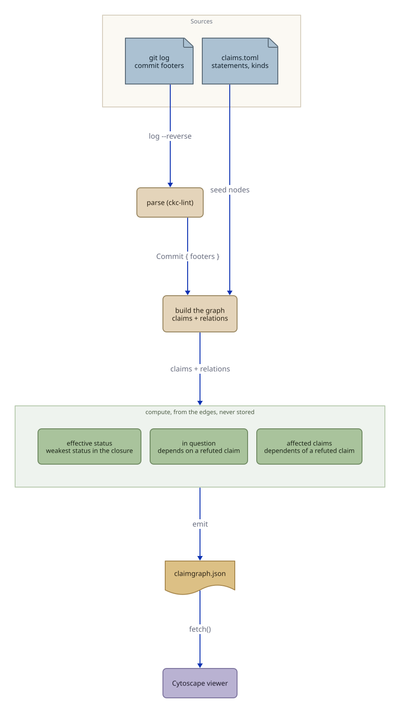

01The idea
A node is a claim — a theorem, lemma, definition, conjecture, or empirical
finding, named by a stable identifier (a Lean fully-qualified name, or a slug in
claims.toml). An edge is a relation between claims, written as a
git-trailer footer in a commit message. There is no separate database: the commit
history is the source of truth, and the graph is reconstructed from it on demand.
02The pipeline
Every claimgraph build walks the commits oldest-first, builds the claims and
relations, then derives the views and serializes them. Nothing downstream is hand-maintained.
{kind=link}

03Where the information comes from
The signal lives entirely in commit-message footers (git trailers). A commit asserts a claim, sets its status, and relates it to others:
formalize(rank-bound-use): bound the approximation error using the exp-sum rank Lean: IGL.approxError Status: math.machine-checked Depends-On: IGL.expSumRank_logBound
Relations like Depends-On and Assumes form the dependency graph
everything propagates over. The rest are events. A breaking event uses ! or
BREAKING CHANGE: and knocks the target down:
refute(separability)!: a counterexample blocks naive separable factorization Disproves: conjecture:naive-separable Status: math.disproved BREAKING CHANGE: conjecture:naive-separable is withdrawn; compensation depends on it.
The claims.toml registry supplies only the human statement and kind for slug-named
claims. Even its status field is a cache — claimgraph recomputes it and
never trusts it as the source of truth.
04What gets computed, not stored
Two views are derived from the edges every build. They are never written into the history — that is the whole point: they stay honest because they are recomputed.
Effective status
The minimum status over a claim and its transitive Depends-On/Assumes
closure — the same thing Lean's #print axioms surfaces.
IGL.approxError asserts machine-checked, but
Depends-On the cited axiom IGL.expSumRank_logBound
axiomatised — so its effective status is
axiomatised.
Blast radius
Given a claim, every dependent a refutation or retraction would put in question. Run it before a breaking change to see what you are about to disturb.
Refuting conjecture:naive-separable disproved
flags IGL.compensatedFactorization in question,
without anyone maintaining that list by hand.
05Run it yourself
The same engine behind this site runs as a CLI on any CKC repository:
# install (pulls in the ckc-lint parser) pip install git+https://github.com/hotherio/claimgraph.git # reconstruct the graph from a repo's history claimgraph build /path/to/repo --claims claims.toml -o claimgraph.json # the honest dashboard, grouped by effective status claimgraph status --claims claims.toml # what depends on a claim · why a status differs from what it asserts claimgraph blast-radius conjecture:naive-separable claimgraph effective IGL.approxError
claimgraph build regenerates the graph from real commits.